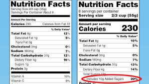

Patrice Wendling
April 15, 2019

Revealing the added sugars in packaged foods and beverages would prevent nearly one million cases of type 2 diabetes and cardiovascular disease in the United States and save about $62 billion in societal costs, new research suggests.
"What was quite striking is that when we combined these facts with possible industry formulation to reduce added sugar content in packaged foods and beverages, the health gains and cost savings would be twice as large," cosenior author Renata Micha, RD, PhD, Friedman School of Nutrition Science and Policy at Tufts University, Boston, told theheart.org | Medscape Cardiology.
The US Food and Drug Administration (FDA) mandated labeling of added sugar content in 2016 but in response to industry concerns delayed compliance from July 2018 to January 2020 for large manufacturers and until January 2021 for small manufacturers with less than $10 million in annual food sales.
"This is a very important study especially for policy makers because it shows that such a simple strategy as labeling for added sugars can have a huge impact not only for health outcomes but save a lot of money for the healthcare system and the economy overall," Frank Hu, MD, PhD, chair of the Department of Nutrition, Harvard T.H. Chan School of Public Health, Boston, said in an interview.
"So I think this puts the current delay in the implementation of the food labels in a more urgent situation because the delay has some negative effects not only on the products, the food industry, but also consumers," he said.
The study is published online April 15 in Circulation and is the first to assess the health impacts and costs of the FDA's added-sugar labeling policy.
Microsimulation Modeling
The researchers used a previously validated microsimulation model and created a nationally representative population of adults, aged 30 to 84 years, using demographic and dietary intake data from the National Health and Nutrition Examination Surveys (NHANES) and disease data from the Centers for Disease Control and Prevention Wonder database. Policy effects were calculated based on recent meta-analyses and an FDA regulatory impact analysis, assuming a modest effect of labeling changes on reducing calorie intake by 6.8%.
The median intake of added sugar from packaged products was 37.3 g/day (mean, 60.6 g/day) at baseline. Between 2018 and 2037, median sugar intake was projected to decline by 5.8 g/day without any new intervention and by an additional 2.1 g/day with sugar labeling or 4.8 g/day with labeling plus product reformulation.
Over the 20-year period, the researchers estimate the added-sugar label would prevent or postpone 354,400 new cases of heart disease and stroke — including 27,830 cardiovascular disease (CVD) deaths — and 599,300 cases of types 2 diabetes, including 16,700 type 2 diabetes-related deaths.
This would result in a gain of 727,000 quality-adjusted life-years (QALYs) and save $31 billion in net healthcare costs and $61.9 billion in societal costs, taking into account lost productivity and informal care costs.
Adding industry reformulation to the scenario would prevent 708,800 CVD cases (50,100 CVD deaths), 1.18 million type 2 diabetes cases (31,540 type 2 diabetes deaths), for an overall gain of 1.3 million QALYs.
This would yield net healthcare cost savings of $57.6 billion — nearly 60% driven by reduced diabetes costs — and save $113.2 billion in societal costs.
In both scenarios, health gains were larger in men than in women and in younger adults, aged 30 to 49 years, reflecting their higher added-sugar intake, particularly sugar-sweetened beverages, the authors note.
The overall "findings were not surprising and they do generate much of the needed evidence to support practice change and help US policy makers prioritize options to improve diet and health," Micha said.
The model, however, may underestimate the full health and economic impacts because it used conservative assumptions about potential industry reformulations and there may be additional benefits of sugar reduction on other health outcomes, such as obesity and tooth decay, she said.
Labeling vs Taxation
"I'm a primary care physician, so I've seen the devastating impact of sugary beverages and the devastating cost of diabetes and heart disease to families, to individuals, and to productivity," American Heart Association (AHA) spokesperson Mary Ann Bauman, MD, said in an interview.
"If anything, I agree with the authors that these numbers and these benefits may be understated," she said. "I wasn't surprised; I was really glad someone put the dollar numbers to it."
Dietary guidelines emphasize the need to reduce sugar intake to less than 10% of total energy, but Americans currently consume more than 15%, with sugar-sweetened beverages the single largest culprit.
"I do think this will give us some leverage," Bauman said. "There's usually some reluctance on the part of industry to change the way they've been working, but if we get the information out to the public now and they can see how it can make a difference, it will speed up the reformulations and also the labeling."
Additional analyses suggest that both the sugar labeling and labeling plus reformulation scenarios would have more than an 80% probability of being cost-effective within 4 years and cost-saving by 2023, according to the study, which was performed as part of the Food-Price project.
Although the model assumes that FDA's added-sugar labeling policy will motivate Americans to change their sugar consumption behaviors, the greater benefit may come from industry reformulation, observed Hu.
"After trans-fat labeling, the majority of trans fat in the food supply was phased out by the food industry," he said. "And even though the changes are not going to be that dramatic for added sugar, there are already examples of where the food industry has voluntarily reduced the amount of added sugar in their products due to policies like sugar taxes and package labeling. So I think those kind of changes will be much more significant and much greater than individual behavior changes based on the information on the food labels."
Both Hu and Bauman note that efforts to reduce exposure to excess sugar with soda taxes have met with fierce resistance from industry in Chicago and in Washington state. Federally mandated food-labeling changes, however, are harder to weaponize politically, particularly when accompanied by public health awareness campaigns.
"I think the public health community should take advantage of this opportunity to launch public health campaigns about how to utilize the changes in food labeling and how that information can be translated into consumer approaches in behaviors and consumption patterns," Hu said. "I think that itself presents a great opportunity to raise awareness about sugar and the health risks associated with over consumption."
Bauman remarked: "I would really like to see a continuing emphasis and publishing on the connection between sugary beverages and type 2 diabetes and heart disease, because we know that if a man drinks one sugary beverage a day, he increases his risk of having a heart attack or dying from heart disease by 20%. We know that kids who drink more sugary beverages than their peers have increased risk of diabetes and developing risk factors for heart disease."
She noted that Americans consume an average of 10 teaspoons of sugar from sugary drinks every day. "There's a lot of room for making change."
All authors report support from National Institutes of Health grants during the conduct of the study. In addition, Micha reports research funding from Unilever and personal fees from the World Bank and Bunge. Hu and Bauman report no relevant conflicts of interest.